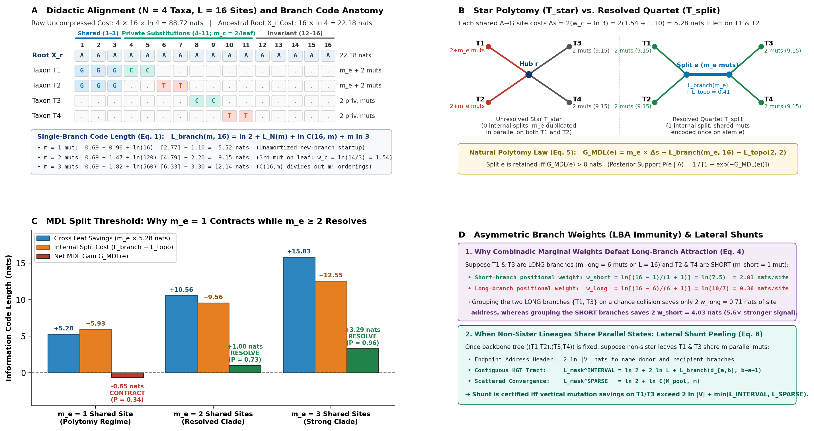
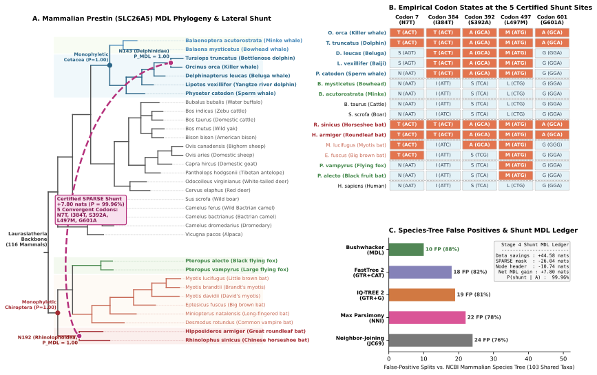

Evolution as Data Compression: How Four Sequences and Sixteen Sites Explain Polytomies, Long-Branch Attraction, and Reticulate Networks
For forty years, molecular phylogenetics has treated substitution matrices as expensive and tree branches as free—forcing algorithms to output fully bifurcating trees even where the data contain zero evolutionary signal, and then relying on bootstrap cutoffs to clean up the mess. Viewing evolution through Rissanen's Minimum Description Length (MDL) principle flips the problem on its head: a branch, a polytomy, or a horizontal gene transfer is real if and only if encoding it makes the alignment file smaller. You can see the entire mechanism at work with pencil and paper on just four sequences of length sixteen.
Nature does not generate each new genome from scratch (L ln 4 nats); DNA polymerase copies an ancestral template and emits a sparse diff of mutations. A phylogeny compresses an alignment because it replays that physical copying graph.
On a 4-taxon, 16-site alignment where leaves carry 2 private mutations, 1 shared mutation saves 5.28 nats on the tips but costs 5.93 nats to open a new internal branch (net −0.65 nats → polytomy). Two or three shared mutations split the branch header and resolve the clade (+1.00 to +3.29 nats).
Because a branch with m mutations encodes an unordered set of sites, adding a mutation to a noisy 6-mutation branch costs only ln(10/7) = 0.36 nats of site address, versus ln(15/2) = 2.01 nats on a quiet 1-mutation branch—giving short-branch homology a 5.6× compression advantage over long-branch collisions.
.bwz vs. lzmaCompiled into a lossless arithmetic compressor (bushwhacker -c), the MDL tree beats gzip, bzip2, and lzma by 1.4×–10.8× on clonal and deep alignments, while the exact point where row-wise lzma overtakes .bwz diagnoses whole-genome mosaic recombination.
Every standard phylogenetic pipeline begins with a strange accounting asymmetry. First, a model selector such as ModelFinder tests hundreds of 4×4 nucleotide substitution matrices using the Bayesian Information Criterion, BIC = −2 ln P(A | T, θ) + k ln L. In that formula, the complexity penalty k ln L is applied strictly to the 1 to 10 continuous rate parameters of the substitution matrix—while the discrete tree topology T (with its N − 3 binary splits chosen from (2N − 5)!! possible trees and 2N − 3 branch lengths) is charged zero penalty.
Because adding a branch is treated as free, a standard maximum-likelihood tree builder is forced to output a fully bifurcating binary tree even when dozens of internal branches carry zero mutations in the alignment. Practitioners then bolt on a second and third stage—running hundreds of bootstrap replicates and picking an arbitrary support cutoff (70%, 80%, or 95%)—to collapse the zero-evidence branches that the likelihood search was forced to invent in the first place.
Why does a phylogenetic tree compress a sequence alignment at all? Because DNA replication is physical delta-compression. When a cell or virus replicates, nature does not draw L nucleotides independently from an i.i.d. soup; DNA polymerase copies an existing parent template and introduces a sparse diff of m ≪ L point substitutions. If we measure both the evolutionary graph and the mutations along its branches in the exact same information-theoretic unit—nats (natural logarithmic units, where 1 nat = 1 / ln 2 ≈ 1.443 bits)—then tree inference, polytomy contraction, long-branch attraction resistance, and horizontal gene transfer detection become a single lossless compression problem. That is what our new engine, Bushwhacker, computes.
1. The 4-Sequence, 16-Site Toy Alignment: Counting Every Nat by Hand
To see how MDL prices a phylogenetic split without hiding behind matrix exponentials, let's work through a tiny alignment of N = 4 sequences (T1, T2, T3, T4) across L = 16 nucleotide sites (Figure 1).
Suppose the ancestral root sequence is 16 adenines (X_r = AAAAAAAAAAAAAAAA). If we transmit the 4 × 16 = 64 nucleotides of the alignment raw, without any tree or ancestral template, each of the 4 possible bases (A, C, G, T) costs ln 4 ≈ 1.386 nats (exactly 2 bits), for a raw uncompressed size of:
Raw Uncompressed Grid: 4 × 16 × ln 4 = 88.72 nats (128 bits = 16 bytes)
Now suppose we transmit the 16-base ancestral root sequence X_r once up front—which costs 16 × ln 4 = 22.18 nats—and then describe each taxon by listing only the sites where it differs from its ancestor. Specifically, across our 16 columns:
- Sites 4–11 (Private Terminal Noise): Each of the four sequences carries mc = 2 private mutations of its own that no other taxon shares (
T1hasCat sites 4–5;T2hasTat sites 6–7;T3hasCat sites 8–9;T4hasTat sites 10–11). - Sites 12–16 (Conserved Core): All four sequences retain the ancestral
A. - Sites 1–3 (Candidate Clade Signal): Sequences
T1andT2share me ∈ {1, 2, 3} identical derivedGmutations, whileT3andT4retain the ancestralA.

X_r = A16 costs 22.18 nats; sites 1–3 carry me ∈ {1, 2, 3} shared G synapomorphies on T1, T2; sites 4–11 carry mc = 2 private mutations per leaf; sites 12–16 are invariant) and the four components of the single-branch packet cost L_branch(m, 16).
(B) Under the unresolved star tree T_star (left), each shared A → G mutation must be encoded twice in parallel on T1 and T2 (Δs = 5.28 nats/site). Under the resolved quartet T_split (right), we pay a one-time topological split header (L_topo = 0.41 nats) plus L_branch(m_e, 16) to encode the shared mutations once on the internal stem e.
(C) When me = 1, opening a new internal branch costs more (5.93 nats) than it saves on the two leaves (5.28 nats), yielding G_MDL = −0.65 nats and contracting the split into a polytomy. At me = 2 (+1.00 nats) and me = 3 (+3.29 nats), shared mutations amortize the branch header and resolve the clade.
(D) The same combinadic formula explains why MDL resists Long-Branch Attraction (5.6× higher positional weight on 1-mutation short branches than 6-mutation long branches) and how Stage 4 certifies lateral shunts.
2. Anatomy of a Branch Packet: Startup Fees vs. Combinatorial Bulk Discounts
To send m mutations along any single branch of length L = 16 so that a receiver can reconstruct the descendant sequence losslessly, the sender must transmit four pieces of information:
- A non-zero branch flag (
ln 2 = 0.69 nats): A 1-bit flag stating whether the branch carries any mutations at all. - How many mutations occurred (
L_N(m)): Since the receiver does not know m in advance, we encode the integer m using Rissanen's universal prefix code,L_N(m) = ln(1 + m) + ½ ln(1 + ln(1 + m)). - Which sites mutated (
ln C(16, m)): Out of 16 columns, there are16 choose mpossible subsets of m sites. Specifying which subset mutated—like picking the winning numbers on a lottery ticket—costsln C(16, m)nats (known in information theory as a combinadic index). - Which new nucleotide state appeared (
m ln 3): Since a mutated base changed from its ancestral letter into one of the 3 other letters (costsln 3 ≈ 1.10 natsunder uniform substitution), specifying the m new letters costsm × 1.10 nats.
Adding those four pieces together gives the exact price tag of a branch carrying m = 1, 2, or 3 mutations across 16 sites:
| Mutations on Branch (m) | 1. Branch Flag (ln 2) |
2. Count Header L_N(m) |
3. Combinadic Sites ln C(16, m) |
4. Base States (m ln 3) |
Total Branch Cost L_branch(m, 16) |
Cost per Mutation |
|---|---|---|---|---|---|---|
| m = 1 mutation | 0.69 nats | 0.96 nats | ln(16) = 2.77 nats | 1.10 nats | 5.52 nats | 5.52 nats / mut |
| m = 2 mutations | 0.69 nats | 1.47 nats | ln(120) = 4.79 nats | 2.20 nats | 9.15 nats | 4.58 nats / mut |
| m = 3 mutations | 0.69 nats | 1.82 nats | ln(560) = 6.33 nats | 3.30 nats | 12.14 nats | 4.05 nats / mut |
Look at the rightmost column of that table: the first mutation on a brand-new branch costs 5.52 nats, but the second adds only 3.63 nats, and the third adds only 2.99 nats! Why do mutations get cheaper per site when you pack more of them onto the same branch?
- First, you only pay for the envelope once: Every branch has to pay its startup header (
ln 2 + L_N(m)) just to open the packet. If you open a brand-new branch to carry a single mutation, that lone mutation bears the entire 1.65-nat envelope fee by itself. - Second, a set of sites has no order (the
m!discount): To point to 1 site out of 16 costsln(16) = 2.77 nats. If you pointed to 3 sites one after another in order, it would cost3 × 2.77 = 8.32 nats. But it doesn't matter whether a branch mutated at sites{1, 4, 5}or{5, 1, 4}—the biological result is identical! Because the binomial coefficientC(16, m) = (16 × 15 × …) / m!divides out allm!orderings, adding one more mutation to a branch that already has mc = 2 private mutations only increases its site-address cost by:wc = ln C(16, 3) − ln C(16, 2) = ln((16 − 2) / (2 + 1)) = ln(14 / 3) = 1.54 natsinstead ofln(16) = 2.77 nats! Adding the base substitution cost (ln 3 = 1.10 nats) means that piggybacking a shared mutation onto an existing 2-mutation leaf costs1.54 + 1.10 = 2.64 natsper leaf, orΔs = 2 × 2.64 = 5.28 natsacross bothT1andT2.
3. Interactive Ledger: Watch the Split Contract at me = 1 and Resolve at me ≥ 2
Now we can pit the two trees head-to-head. Under the Star Polytomy (T_star), there is no internal split: every shared A → G mutation at Sites 1–3 is written twice in parallel (once in T1's packet and once in T2's packet), costing 5.28 nats per shared site. Under the Resolved Quartet (T_split = ((T1,T2),(T3,T4))), we pay L_topo(2,2) = ln(1.5) = 0.41 nats to state which of the 3 possible quartet pairings we picked, plus L_branch(m_e, 16) to write the shared mutations once on the shared internal stem e.
Click through me = 0, 1, 2, and 3 shared mutations below to see the exact nat-by-nat receipt:
4. Why the Same Formula Defeats Long-Branch Attraction (Without a Rate Matrix)
A classic failure mode of unweighted parsimony occurs in the Felsenstein Zone: when two non-sister lineages evolve very rapidly (long branches) while their true sisters evolve slowly (short branches), random mutations along the two long branches frequently collide on the same nucleotide letter by chance. Because unweighted parsimony counts every step as equal (1 step = 1 point), those random collisions trick parsimony into grouping the two long branches together.
Look at what happens on our 16-site alignment when we apply the combinadic site-address weight w_c = ln((L − m_c) / (m_c + 1)) (Figure 1D):
- Suppose
T2andT4are short branches carrying onlym_short = 1private mutation across the 16 sites. Adding or removing a mutation on a short branch shifts its combinadic site address by:wshort = ln((16 − 1) / (1 + 1)) = ln(7.5) = 2.01 nats / site - Meanwhile, suppose
T1andT3are long, noisy branches carryingm_long = 6private mutations across the 16 sites. Because a branch with 6 mutations already divides its combinadic site address by7!, adding or removing one mutation on a noisy branch shifts its positional code length by only:wlong = ln((16 − 6) / (6 + 1)) = ln(10 / 7) = 0.36 nats / site
Now compare the compression gain of grouping the two long branches {T1, T3} on a chance convergent collision versus grouping the two short branches {T2, T4} on a true homology:
- Pulling a shared state off the two long branches saves only
2 × w_long = 2 × 0.36 = 0.71 natsof positional address. - Pulling a shared state off the two short branches saves
2 × w_short = 2 × 2.01 = 4.03 natsof positional address—a 5.6× compression advantage!
In fact, expanding w_c = ln((L − m_c) / (m_c + 1)) ≈ −ln(p_c / (1 − p_c)) shows that the combinadic step weight is the exact finite-sample log-odds branch weight that Felsenstein (1981) derived for maximum likelihood under unequal evolutionary rates—emerging directly from counting subsets of columns without a single matrix exponential.
5. Beyond Trees: Convergent Adaptation in Prestin and the Recombination Switchpoint
What happens when two distant lineages genuinely share mutations that violate the vertical tree—either because of convergent molecular evolution (like bats and dolphins independently evolving sonar) or horizontal gene transfer / homologous recombination?
In standard maximum likelihood, you cannot simply add a horizontal "shortcut" edge to a tree, because adding an edge always increases the log-likelihood and overfits the alignment. Under MDL, the rule is simple: once the vertical backbone tree is fixed, a lateral shunt edge between two non-sister branches u and v is certified if and only if the duplicate mutations it eliminates save more nats than the cost of stating:
- Which two branches are linked:
2 ln |V|nats to address the donor and recipient nodes; and - Which sites were transferred: competing between a contiguous genomic block mask (
INTERVAL, costingln 2 + 2 ln Lfor the start and end coordinates of a recombination tract) and a scattered site mask (SPARSE, costingln 2 + ln C(M_pool, m)for scattered convergent amino acids).

SLC26A5, 116 mammals, 2,235 bp) without distorting the species tree.
(A) Standard protein likelihood models sometimes group echolocating dolphins with echolocating bats because five convergent amino-acid replacements at conserved sites carry huge log-likelihood penalties if left on separate lineages. Bushwhacker recovers strictly monophyletic Cetacea (P_MDL = 1.00) and Chiroptera (P_MDL = 1.00) anchored by neutral synonymous synapomorphies, and then peels the five shared echolocation replacements onto a certified Stage 4 SPARSE lateral shunt (+7.80 nats, P = 99.96%) linking Delphinidae (N143) and Rhinolophoidea (N192).
(B) Empirical codon and amino-acid states at the five certified shunt sites (N7T, I384T, S392A, L497M, G601A).
(C) False-positive splits and shunt MDL ledger.
Because every nat in the MDL ledger corresponds to an actual prefix code, we also compiled Bushwhacker directly into an executable, bit-for-bit lossless sequence archive format (.bwz, invoked via bushwhacker -c and bushwhacker -d) using 32-bit arithmetic coding along a causal preorder traversal of the inferred phylogeny. Comparing .bwz against standard general-purpose string compressors (gzip -9, bzip2 -9, and lzma -9) across 19 empirical alignments reveals both the power of evolutionary delta-coding and a model-free diagnostic for when a single tree breaks down:
| Dataset / Biological Regime | Dimensions (N × L) | gzip -9 (Rows) |
bzip2 -9 (Tree Cols) |
lzma -9 (Rows) |
.bwz Archive |
Best String / .bwz |
|---|---|---|---|---|---|---|
| Influenza A (Clonal Viral) | 349 × 987 bp | 9,081 B | 4,269 B | 6,535 B | 2,247 B | 1.90× smaller |
| Mammalian Prestin (Coding Gene) | 116 × 2,235 bp | 27,948 B | 14,704 B | 11,861 B | 7,536 B | 1.57× smaller |
| Human mtDNA (Complete Organelles) | 78 × 16,585 bp | 27,366 B | 9,536 B | 9,568 B | 6,046 B | 1.58× smaller |
Land Plant rbcL (Deep Plastid) |
483 × 1,398 bp | 66,973 B | 45,328 B | 33,348 B | 21,318 B | 1.56× smaller |
| Prokaryotic 16S rRNA (Deep Taxonomy) | 2,048 × 1,348 bp | 448,657 B | 169,567 B | 147,460 B | 108,610 B | 1.36× smaller |
| S. pneumoniae PMEN1 (11 Full Chromosomes) | 11 × 2,221,315 bp (24.4 Mbp) | 6,434,271 B | 706,678 B | 599,856 B | 598,241 B | 10.8× vs gzip (68 KB for 10 non-root genomes = 326× delta!) |
| Hominoidea MHC Class I (Gene Conversion) | 379 × 1,128 bp | 18,112 B | 7,663 B | 8,256 B | 4,042 B | 1.90× smaller |
| 83 Sarbecovirus Genomes (Whole-Genome Mosaic) | 83 × 30,965 bp | 499,907 B | 102,808 B | 80,344 B | 96,745 B | 0.83× (Single-Tree Failure!) |
| HIV-1 KAL153 / CRF02_AG (Multi-Breakpoint CRF) | 9 × 9,953 bp | 16,614 B | 11,010 B | 9,635 B | 14,784 B | 0.65× (Single-Tree Failure!) |
.bwz Against Row-Wise lzma Detects Rampant Recombination
Why does .bwz crush every string compressor on vertical alignments and localized HGT tracts, yet lose to row-wise lzma -9 on whole-genome Sarbecovirus mosaics and HIV-1 circulating recombinant forms? Because row-wise lzma -9 (with a 64 MB sliding dictionary) is a Lempel–Ziv copying machine that can switch its backward copy pointer to a different donor genome every few hundred base pairs for ~4 bytes per breakpoint—acting as an implicit Li–Stephens haplotype copying model. In controlled breakpoint titrations (N = 56, L = 12 kb), .bwz beats lzma -9 by 1.30× at K = 0 breakpoints, crosses over at K = 2–3 breakpoints per genome, and diagnoses exactly when mosaic recombination has shattered the single-tree assumption into a multi-parental ancestral recombination graph (ARG).
6. Reproducible CLI Quickstart
Bushwhacker is written in dependency-free, bit-parallel Rust (packing 64 alignment columns per [u64; 4] register word) and compiles to both a native CLI binary and a client-side WebAssembly module.
# 1. Infer an MDL-contracted phylogeny + Stage 4 reticulate shunts (FASTA, PHYLIP, or NEXUS) bushwhacker docs/examples/prestin.fasta -o prestin.nwk -j prestin_mdl.json # 2. Compress any alignment into a self-contained, bit-for-bit lossless .bwz archive bushwhacker docs/examples/InfluenzaA.fasta -c InfluenzaA.bwz # 3. Restore the exact original FASTA alignment (headers + sequences) from .bwz bushwhacker InfluenzaA.bwz -d InfluenzaA_restored.fasta diff -s docs/examples/InfluenzaA.fasta InfluenzaA_restored.fasta